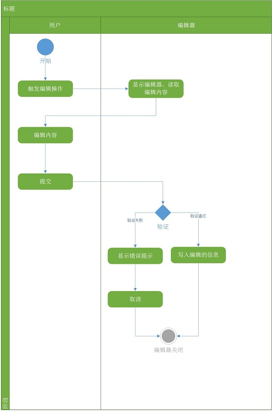

基本的编辑器
导引
欢迎使用BUI！在这一章节里，我们将学习以下内容:
- 简介
- 编辑器的功能和属性
- 获取文本和写入文本
- 验证和显示错误
- 支持的事件
简介
首先我们来定义一下编辑器的概念和应用场景：
- 定义：为了修改页面上的内容，点击文本（按钮）弹出一个浮层，将需要编辑的文本展示在可输入的控件中，进行编辑，点击确认时进行验证，验证通过则修改内容。可以取消编辑。
- 场景：修改列表（表格、树）中的文本；修改展示在详情页中的用户信息等等
编辑器的功能和属性
根据上面的定义和场景我们来设计编辑器支持的属性和功能：

通过上面的流程图，BUI中对编辑器的实现提供了一下功能：
- 自动处理显示、对齐和隐藏
- 自动读取编辑的文本
- 自定义编辑文本的组件
- 回填编辑的内容，以及自动处理内容对应的数据
- 自动验证
下面是基础编辑器的一个示例，通过这个示例，大家来了解一下编辑器的功能：
编辑器的内部控件
编辑器的内部控件可以通过下面几个属性来指定：
- 一般的编辑器中是一个表单字段(form-field)，通过编辑器的
defaultChildClass:'form-field'来实现的；
- 而
field字段由controlCfgField : 'field'来指定
- 通过
innerValueField:'value'属性来决定读取表单字段的值(value)
获取文本和返回文本
对于一般的编辑器，BUI提供了2个格式化函数：
- parser(text,trigger) :用于转化获取的文本，填充到编辑器的内部控件中
- formatter(value) : 用户将编辑器内部控件的值格式化成需要的文本
验证和错误信息
- 编辑器中，使用的是表单字段作为子控件，所以可以在其中配置验证信息
rules
- 错误信息显示在一个tooltip上，可以通过
tooltip自定义显示错误信息的容器
- 错误信息的显示位置可以通过,
errorAlign来配置
支持的事件
编辑器支持以下事件：
- accept : 接受编辑结果，如果
autoUpdate : true，则会自动更新编辑的结果
- beforeaccept :接受前，如果return false;则会阻止accept事件触发
- cancel
API
下面只是简单的列表，未显示从父类继承来的方法，详细信息请查看API文档
下一步学习
本章主要介绍了编辑器的概念和实现的功能，你可以继续学习记录编辑器控件和弹出框编辑器。